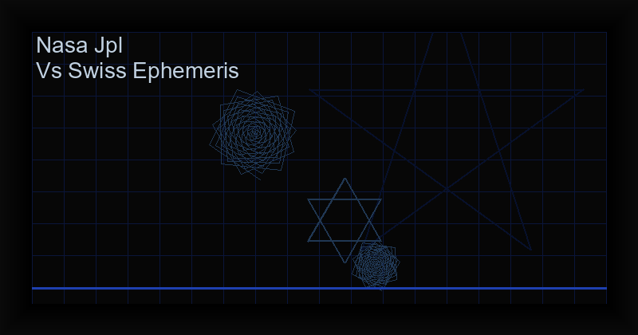

NASA JPL vs Swiss Ephemeris: which one actually gives you the right planetary positions?
Table of Contents
The short answer
Both are professional grade. A full VSOP87 plus ELP-2000 implementation and a Swiss Ephemeris implementation agree on planetary positions to well under one arcminute over the period that matters for a natal chart, and an arcminute of ecliptic longitude is about four seconds of birth time. If you are choosing between two astrology apps, the ephemeris is the least interesting thing that separates them.
One thing the ephemeris does not decide is which zodiac to use. The tropical and sidereal comparison covers the ayanamsa, the house systems, and what actually changes when you switch.
What actually moves a planet from one house to the other, or a Moon sign from one sign to the next, is the boring part: the timezone you typed, the daylight saving flag, whether the app used Placidus or whole sign, and whether it returned the apparent or the mean position. Those produce differences of degrees. The ephemeris produces differences of seconds.
There is one case where the source genuinely matters, and it comes up constantly in forums: when you compare your chart against a table you generated yourself, and the two disagree by about fifty arcseconds. That is almost never an error. It is the difference between the mean equinox of date and the apparent equinox of date, and it accounts for roughly the precession of the equinox in longitude over the years between your birth and now. The rest of this page explains how to tell the two apart.
What an ephemeris actually is
An ephemeris is a table of where the planets were, at a given moment, for a long span of time. When people ask which ephemeris an app uses, they are really asking three separate questions that get bundled into one:
- Which mathematical theory produces the positions: a semi-analytic planetary theory, or a numerical integration of the equations of motion.
- Which data files carry those numbers: the JPL Development Ephemeris series, or the tables compiled by Astrodienst.
- Which implementation the app runs: how many terms of the series it kept, and how it handles time, nutation, aberration, light-time and the observer's coordinates.
The third point is where most of the real-world variation lives. A library that ships the first four hundred terms of a series that has ten thousand will be faster and less accurate than one that ships the whole thing, and the documentation of the popular astronomy packages is usually explicit about which they do.
The two things people call JPL and Swiss Ephemeris
What "JPL" means
JPL is the Jet Propulsion Laboratory, and the thing its name refers to is the Development Ephemeris, the sequence of files (DE200, DE430, DE440 and successors) that describe the motion of the solar system over long spans. Those files are not hand-entered tables. The planetary positions inside them come from VSOP87, a semi-analytic theory by Pierre Bretagnon and Gerard Francou of the Bureau des Longitudes in Paris, published in 1988. The Moon comes from ELP-2000/82b, the lunar theory by Chapront and Toublat, from the same institution.
The practical consequence is that when a piece of astronomy software says it uses JPL ephemerides, it is usually loading a DE file and evaluating VSOP87 and ELP against it. Horizons, the public interface the JPL exposes for computing positions of solar system bodies, works the same way. So does Skyfield, the Python library used in a large share of modern astronomy code.
What "Swiss Ephemeris" means
Swiss Ephemeris is an independent implementation by Astrodienst, in Zurich, developed since the 1980s. It did not come from a space agency and it was not built for astronomy. It was built for astrology, it became the reference implementation in professional astrology software, and it is the reason most astrology programs give the same positions for the same birth data.
Its licence is the other half of the comparison. The source is published under the GNU Affero General Public License, with a commercial licence available for applications that cannot comply with the AGPL. That is a real constraint for a closed-source commercial app, and it is part of why the choice is not always free.
Side by side
| Source | What it is | Licence | Where it shows up |
|---|---|---|---|
| VSOP87 (full series) + ELP-2000/82b | Semi-analytic planetary and lunar theory, Bureau des Longitudes, 1988 and 1983 | Public domain | JPL Development Ephemeris, Horizons, Skyfield, and a growing number of astrology apps |
| VSOP87 (truncated) | The same theory with most of the terms dropped for speed | Public domain | Many open-source ephemeris libraries. The truncation is the usual reason for a discrepancy of tens of arcseconds |
| Swiss Ephemeris | Independent high-precision implementation, Astrodienst, Zurich | AGPL, or a commercial licence for closed-source use | The de facto standard in professional astrology software |
On the accuracy figures themselves, the honest thing is to read the documentation of each project rather than a blog post, including this one. What is not in dispute is the order of magnitude: a full implementation sits in the arcsecond class over its validity window, and a truncated series sits in the tens-of-arcseconds class. Both are far better than anything a consumer astrology app needs. The documentation of the Swiss Ephemeris and of the JPL ephemerides states its own figures, and those are the ones worth quoting.
How big is the difference in arcminutes
One degree of ecliptic longitude is 60 arcminutes. The houses and the Ascendant rotate through the whole zodiac in about a day, which works out at roughly 0.25 degrees for every minute of time, or 4 minutes of time for every degree. Put the two together and you get the number that actually matters for reading a chart:
- 1 arcsecond of longitude error is about 0.07 seconds of birth time.
- 1 arcminute of longitude error is about 4 seconds of birth time.
- 1 arcminute of latitude error on the Moon moves it about 1 degree across the sky, and moves its house placement if it sat close to a cusp.
The Moon is the body where this shows, because it covers 13 degrees a day against the Sun's one degree. An error of one arcminute in the Moon's longitude is about eleven seconds of lunar motion. In a natal chart with a birth time given to the minute, that is noise. In a transiting chart computed for a specific hour, it is also noise. It becomes interesting only for things computed to the second: the exact moment of a lunar phase, the exact minute of a solar return, and a birth time that lands within a few seconds of a house cusp.
Where the difference shows up in a real chart
Three situations, in decreasing order of how often they matter:
- A planet sitting within an arcminute of a house cusp. Here a one-arcminute difference can put the planet in a different house. This is the only case in a natal chart where the ephemeris source changes the reading, and it happens to a few charts in a hundred rather than to most of them.
- The exact time of a lunar phase or a solar return. A solar return defined to the minute is sensitive to a few arcseconds, and the difference between the two series is a small part of the error budget there. The larger part is usually the definition of the return itself.
- Nothing at all. For the overwhelming majority of charts, the two series produce the same reading, and a chart that differs between two apps differs because of something else.
This is also why the folklore about professional astrology software being more accurate than an app is largely about the other layers. A program that lets you choose the house system, shows the exact degrees and minutes, and displays the time zone it used will serve a practitioner better than a program with a more precise ephemeris and a fixed set of defaults.
The real reason your chart changes between apps
This is the part that generates most of the forum threads. In rough order of how much damage they do:
| Cause | Size of the difference | How to spot it |
|---|---|---|
| Daylight saving mishandled | About 15 degrees of Ascendant | The Ascendant is off by roughly a quarter of the circle while everything else matches |
| House system | Several degrees, sometimes a whole sign | Whole sign and Placidus disagree for a large share of birth times. A planet sitting near a cusp in one system and a sign away in the other is the usual giveaway |
| Timezone | Arbitrary | Everything shifts together, including the Ascendant |
| Tropical versus sidereal zodiac | About 0.014 degrees per year, so roughly a degree across a human lifetime | Every planet is off by the same amount |
| Mean versus apparent position | About 50 arcseconds | A small, constant offset on every body, growing with the distance in time from J2000 |
| Geocentric versus topocentric | Up to about 1 degree for the Moon | Only the Moon moves noticeably |
The daylight saving row is the one that catches almost everyone. If a chart was computed with the birth time taken from a hospital record or an old passport, and the app applies a daylight saving rule that did not apply on that date in that country, the Ascendant moves a quarter of the circle and the whole reading changes with it.
What we chose for Astral Lab, and why
Astral Lab implements VSOP87 for the planets and ELP-2000 for the Moon, the same series that sit behind the JPL Development Ephemeris. Three reasons, in order of weight:
- The accuracy is in the class that a natal chart needs. A truncated series would have been plenty for a chart, and we did not want to carry a truncation error for a feature users never asked to be approximate.
- The licence keeps the app free of a constraint. The JPL series are public domain. Swiss Ephemeris is AGPL, or a commercial licence for closed-source applications. Either route is possible, and either route costs something: one of them is a licence, the other is a rate limit on how many positions an app can compute per day under a free tier. For a one-time purchase app that runs entirely on the device, the public domain series are the straightforward choice.
- It makes verification easy. The tools a curious reader already has, Horizons and the Astronomical Almanac, work from the same series. A reader can check a position from the app against a reference they generated themselves, without installing anything.
Astral Lab runs the calculation on the device, works with no account, and keeps no data. It is available on Google Play for a one-time purchase of $6.99.
How to check your own chart
You do not need to trust anybody's app, including ours. This takes about ten minutes and settles the question for any body, on any date.
- Get the position from the app. Pick a planet, note its ecliptic longitude, and note the exact UTC date and time it used. Make sure the app is showing apparent or geocentric position if it offers the choice, and write down which.
- Go to Horizons at horizons.jpl.nasa.gov, or use its API. Set the same UTC time, the same observer type, and the same coordinate convention.
- Read the ecliptic longitude from the observer table. For the Moon, use the apparent geocentric longitude to match an app that reports apparent positions.
- Compare in the right frame. If the app uses the mean equinox of date, ask Horizons for the mean equinox of date. Comparing a mean position with an apparent one puts a constant offset of about fifty arcseconds between them, and that offset grows with the years between the date and J2000. It looks exactly like a bug in the app and is not one.
- Expect agreement within a few arcseconds for the Moon and within a couple of arcseconds for the inner planets. If you are seeing more than that, the cause is one of the five in the table above, and the timezone row is the first one to check.
The same procedure works for the Ascendant, with one addition: give Horizons the latitude and longitude of the birth place, and use the same house system in both tools, because the house system is a choice made after the Ascendant is computed.
What we have not done
Stating this plainly, because a page that only lists strengths is worth nothing:
- We have not published a full error analysis of our own implementation.
- We have not had a third party audit it.
- We have not published a head-to-head table of our output against Swiss Ephemeris for a set of reference dates.
- We have not compared our Moon against ELP at the sub-arcsecond level, and we do not claim that accuracy. We claim the class of accuracy that the underlying series provides.
That work is worth doing, and it is not on the schedule because it is not what readers have asked for. If you want it, say so and we will do it, and publish the result whatever it shows. If you find a position that disagrees with a reference by more than the figures above, email it and we will publish the fix and the correction.
FAQ
Which is more accurate, JPL or Swiss Ephemeris?
For a natal chart, the difference between a full implementation of either one is not visible. Both projects publish their own accuracy figures and they are worth reading directly. The practical difference for an app builder is the licence: the JPL series are public domain, and Swiss Ephemeris is AGPL or commercial.
Does the ephemeris change my horoscope?
Almost never. It changes a house placement if a planet sits within about an arcminute of a cusp, and it changes the computed minute of a lunar phase or a solar return. Everything else that differs between two apps comes from the timezone, the daylight saving rule, the house system or the zodiac convention.
Is Swiss Ephemeris free to use in an app?
It is published under the AGPL. An app that complies with the AGPL can use it, and an app that cannot has to buy a commercial licence from Astrodienst. Ask the vendor which one you are getting.
Why does my Moon sign differ between two apps?
Almost always the time, not the ephemeris. Check the timezone and the daylight saving rule for the date and place of birth, then check whether one of the apps is using a different house system. A Moon one sign off is a birth-time problem, not a series problem.
Does Astral Lab use Swiss Ephemeris?
No. It implements VSOP87 for the planets and ELP-2000 for the Moon, the same series behind the JPL Development Ephemeris. The accuracy is equivalent for a natal chart and the licence keeps the app free of AGPL obligations.
How do I check a planetary position myself?
Use Horizons. Match the UTC time, the observer type, and the coordinate convention, and compare the ecliptic longitude. Ten minutes of work settles whether an app is right, including ours.
References
- Bretagnon, P. and Francou, G. (1988). "Planetary theories in rectangular and spherical variables. VSOP87 solutions." Astronomy and Astrophysics, 202, 309-315. The VSOP87 solutions and their documentation are published by the Bureau des Longitudes.
- Chapront-Toublat, M. and Chapront, J. (1983). "ELP 2000-85: semi-analytic ephemeris of the Moon." Astronomy and Astrophysics, 128, 61-84.
- Jet Propulsion Laboratory, Solar System Dynamics. Development Ephemerides and the Horizons interface, horizons.jpl.nasa.gov. The DE series and the Horizons user documentation.
- United States Naval Observatory. The Astronomical Almanac, annual edition. The printed reference tables for positions, which are independent of both implementations above.
- Astrodienst. Swiss Ephemeris: technical documentation and licence terms, astro.com/swisseph. Read the accuracy section and the licence section separately. They answer different questions.
- Pierce, B. (2016). "Skyfield: Elegant astronomy for Python." Journal of Open Source Software, 1(12), 1517. For how the JPL series are consumed in practice by open astronomy code.
Related Resources
Try it on your own chart
Astral Lab computes natal charts, transits and aspect grids with VSOP87 and ELP-2000 precision, entirely on the device. No account, no tracking, and it works with the plane.
Discussion & Comments
Tried this practice? Tell us what happened below. Reader results are the most useful feedback we get — they show other practitioners what to expect and tell us which guides to write next.